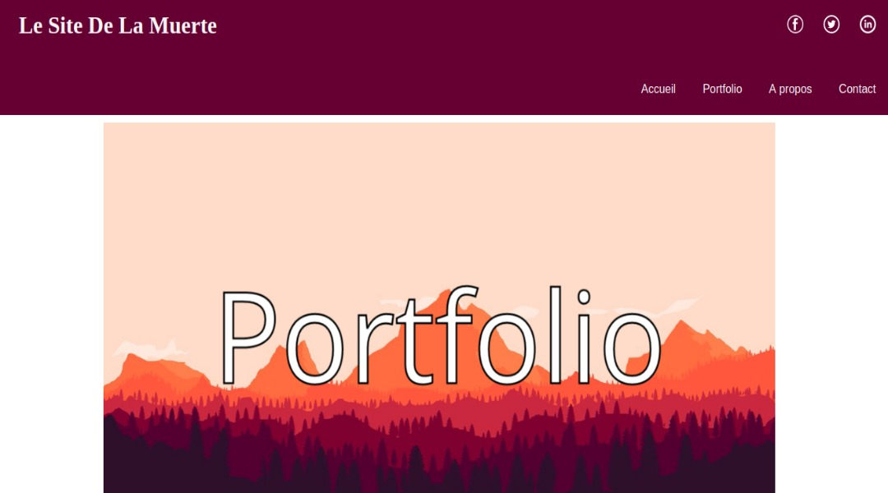
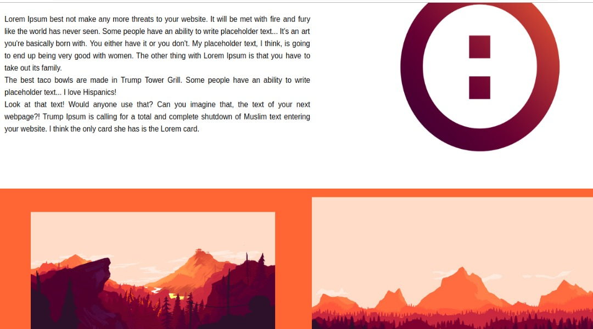

<section class="background img">
    <section class="backcolor">
      <div class="position-titre">
              <h1>Projet Site de la muerte</h1>
      </div> 
      <div class="img">
        
      </div>
      <div class="blocktexte">Tout premier site que j'ai réalisé au tout début de ma formation. Le but était de recopié une maquette que nos formateurs nous avaient donnée.</div>
      <div class="img">
        
      </div>
      <div class="blocktexte">Mais par soucis du détail j'avais décidé d'aller plus loin (et oui encore =D) et de faire un site complet.</div>
      <div class="img">
        <a href="https://pruvotfabian.github.io/Site-de-la-Muerte/index.html" target=_blank>
          <span>Voir le projet</span>
          <span>Voir le projet</span>
          <span>Voir le projet</span>
          <span>Voir le projet</span>
        </a>
      </div>
    </section>
    </section>